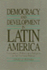
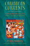

|
Marxism
in Latin America
edited by Aguilar, Luis E. 412 pp • 4x7
• Spring 1978
paper 978-0-87722-108-1
cloth 978-0-87722-106-7
|
|
Living in the Crossfire
Favela Residents, Drug Dealers, and Police Violence in Rio de Janeiro
Alves, Maria Helena Moreira and Philip Evanson
254 pp • 6x9 • Spring 2011
paper 978-1-4399-0004-8
cloth 978-1-4399-0003-1
|
|
Merengue
Dominican Music and Dominican Identity
Austerlitz, Paul, foreword by Robert Farris Thompson 224
pp • 6x9 • Fall 1996
paper 978-1-56639-484-0
cloth 978-1-56639-483-3
|
 |
Liberation
Theology
Essential Facts about the Revolutionary Religious Movement in
Latin America and Beyond
Berryman, Phillip 240 pp • 5x8 •
Spring 1987
cloth 978-0-87722-479-2 |
 |
Borderless
Borders
U.S. Latinos, Latin Americans, and the Paradox of Interdependence
edited by Bonilla, Frank, Edwin Mel�ndez, Rebecca Morales and Mar�a
de los Angeles Torres 336 pp • 6x9 •
Spring 1998
paper 978-1-56639-620-2
cloth 978-1-56639-619-6
|
 |
Women
in the Latin American Development Process
edited by Bose, Christine E. and Edna Acosta-Bel�n 304
pp • 6x9 • Spring 1995
paper 978-1-56639-293-8
cloth 978-1-56639-292-1
|
|
Between
Race and Empire
African-Americans and Cubans before the Cuban Revolution
edited by Brock, Lisa and Digna Caste�ada Fuertes, foreword by Manning
Marable 289 pp • 6x9 • Spring 1998
paper 978-1-56639-587-8
cloth 978-1-56639-586-1
|
 |
Maya
In Exile
Guatemalans in Florida
Burns, Allan F., introduction by Jer�nimo Camposeco 256
pp • 5.5x8.25 • Spring 1993
paper 978-1-56639-036-1
cloth 978-1-56639-035-4 |

|
Economies of Desire
Sex and Tourism in Cuba and the Dominican Republic
Cabezas, Amalia L.
232 pp • 5.5x8.25 • Spring 2009
paper 978-1-59213-750-3
cloth 978-1-59213-749-7
|
|
I
Remember Julia
Voices of the Disappeared
Carlson, Eric Stener 240 pp • 5.5x8.25
• Spring 1996
paper 978-1-56639-437-6
cloth 978-1-56639-430-7
|
 |
Caribbean Migration to Western Europe and the United States
Essays on Incorporation, Identity, and Citizenship
edited by Cervantes-Rodriguez, Margarita, Ramon Grosfoguel and Eric Mielants
270 pp • 6x9 • Fall 2008
cloth 978-1-59213-954-5
|
|
Muchachas
No More
Household Workers in Latin America and the Caribbean
edited by Chaney, Elsa M. and Mary Garcia Castro 520
pp • Fall 1988
paper 978-0-87722-835-6
cloth 978-0-87722-571-3 |
 |
Reggae
Routes
The Story of Jamaican Music
Chang, Kevin O’Brien and Wayne Chen 256
pp • 6.75x9.25 • Spring 1998
paper 978-1-56639-629-5
|
 |
Urban
Leviathan
Mexico City in the Twentieth Century
Davis, Diane E.
424 pp • 6x9.25 •
Spring 1994
paper 978-1-56639-151-1
cloth 978-1-56639-150-4
|
|
Unraveling the Real
The Fantastic in Spanish-American Ficciones
Duncan, Cynthia
280 pp • 6x9 • Fall 2010
paper 978-1-4399-0241-7
cloth 978-1-4399-0240-0
|
 |
Taxes
and State Power
Political Instability in Bolivia, 1900-1950
Gallo, Carmenza 200 pp • Spring 1991
cloth 978-0-87722-800-4 |
 |
Arsenio
Rodr�guez and the Transnational Flows of Latin Popular Music
Garcia, David F. 224 pp � 6x9 � Spring 2006
paper 978-1-59213-386-4
cloth 978-1-59213-385-7
|
|
Rethinking
Protestantism in Latin America
edited by Garrard-Burnett, Virginia and David Stoll 240
pp • 5.5x8.25 • Fall 1993
paper 978-1-56639-103-0
cloth 978-1-56639-102-3
|
 |
Lucia
Testimonies of a Brazilian Drug Dealer's Woman
Gay, Robert 240 pp • 6x9 • Spring
2005
paper 978-1-59213-339-0
cloth 978-1-59213-338-3
|
|
Popular
Organization and Democracy in Rio De Janeiro
A Tale of Two Favelas
Gay, Robert 208 pp • 5.5x8.25 •
Fall 1993
paper 978-1-56639-120-7
cloth 978-1-56639-119-1
|
 |
Free
Trade and Uneven Development
The North American Apparel Industry after NAFTA
edited by Gereffi, Gary, David Spener and Jennifer Bair 368
pp • 7x10 • Fall 2002
paper 978-1-56639-968-5
cloth 978-1-56639-967-8
|
 |
The
Effects of the Nation
Mexican Art in an Age of Globalization
edited by Good, Carl and John V. Waldron 232
pp • 6x9 • Spring 2001
paper 978-1-56639-866-4
cloth 978-1-56639-865-7
|
 |
Fishers
at Work, Workers at Sea
A Puerto Rican Journey through Labor and Refuge
Griffith, David and Manuel Vald�s Pizzini 280
pp • 6x9 • Fall 2001
paper 978-1-56639-911-1
cloth 978-1-56639-910-4
|
|
Deciding
to be Legal
A Maya Community in Houston
Hagan, Jacqueline Maria 224 pp • 5.5x8.25
• Fall 1994
paper 978-1-56639-257-0
cloth 1978-1-56639-256-3 |

|
Vodou Songs in Haitian Creole and English
Hebblethwaite, Benjamin
396 pp • 6x9 • Fall 2011
paper 978-1-4399-0602-6
cloth 978-1-4399-0601-9
|
 |
Bachata
A Social History of a Dominican Popular Music
Hernandez, Deborah Pacini 296 pp • 6x9
• Spring 1995
paper 978-1-56639-300-3
cloth 978-1-56639-299-0 |
 |
Mayan
Drifter
Chicano Poet in the Lowlands of America
Herrera, Juan Felipe 330 pp • 6x9 •
Fall 1996
paper 978-1-56639-482-6
cloth 978-1-56639-481-9
|
|
Ethical Borders
NAFTA, Globalization, and Mexican Migration
Hing, Bill Ong
248 pp • 6x9 • Spring 2010
paper 978-1-59213-925-5
cloth 978-1-59213-924-8
|

|
Selecting Women, Electing Women
Political Representation and Candidate Selection in Latin America
Hinojosa, Magda
240 pp • 6x9 • Fall 2012
paper 978-1-4399-0848-8
cloth 978-1-4399-0847-1
|

|
Cold War in a Hot Zone
The United States Confronts Labor and Independence Struggles in the British West Indies
Horne, Gerald
272 pp • 6x9 • Spring 2007
paper 978-1-59213-628-5
cloth 978-1-59213-627-8
|
 |
Spirits,
Blood, and Drums
The Orisha Religion in Trinidad
Houk, James T. 256 pp • 5.5x8.25 •
Fall 1995
paper 978-1-56639-350-8
cloth 978-1-56639-349-2
|
 |
Salsa World
A Global Dance in Local Contexts
edited by Hutchinson, Sydney
240 pp • 6x9 • Fall 2013
paper 978-1-4399-1007-8
cloth 978-1-4399-1006-1 |
 |
Where Rivers Meet the Sea
The Political Ecology of Water
Kane,
Stephanie C.
246 pp • 6x9 • Fall 2012
paper 978-1-4399-0931-7
cloth 978-1-4399-0930-0
|

|
Another
Arabesque
Syrian-Lebanese Ethnicity in Neoliberal Brazil
Karam, John Tofik
232 pp • 6x9 • Fall 2006
paper 978-1-59213-540-0
cloth 978-1-59213-539-4
|

|
The International Monetary Fund and Latin America
The Argentine Puzzle in Context
Kedar, Claudia
264 pp • 6x9 • Fall 2012
cloth 978-1-4399-0909-6
|
 |
Dominican Baseball
New Pride, Old Prejudice
Klein, Alan
200 pp • 6x9 • Spring 2014
paper 978-1-4399-1088-7
cloth 978-1-4399-1087-0
|

|
Searching for Mr. Chin
Constructions of Nation and the Chinese in West Indian Literature
Lee-Loy, Anne-Marie
198 pp • 5.5x8.25 • Spring 2010
cloth 978-1-43990-130-4
|
|  |
Democracy
and Development in Latin America
Economics, Politics and Religion in the Post-War Period
Lehmann, David 272 pp • 6x9 • Spring
1990
paper 978-1-56639-011-8
cloth 978-0-87722-723-6 |
 |
The
Maya Diaspora
Guatemalan Roots, New American Lives
edited by Loucky, James and Marilyn M. Moors 248
pp • 6x9 • Fall 2000
paper 978-1-56639-795-7
cloth 978-1-56639-794-0
|
 |
Machos,
Maricones, and Gays
Cuba and Homosexuality
Lumsden, Ian 304 pp • 5.5x8.25 •
Fall 1995
paper 978-1-56639-371-3
cloth 978-1-56639-370-6
|
 |
Sounds of the Modern Nation
Music, Culture, and Ideas in Post-Revolutionary Mexico
Madrid, Alejandro L.
224 pp • 5.25x8.25• Fall 2008
cloth 978-1-59213-694-0
|
 |
Caribbean
Currents
Caribbean Music from Rumba to Reggae
Third Edition
Manuel, Peter with Michael Largey
338
pp • 6x9 • Fall 2016
paper 978-1-4399-1400-7
cloth 978-1-4399-1399-4
|
|  |
Caribbean
Currents
Caribbean Music from Rumba to Reggae
Manuel, Peter with Kenneth Bilby and Michael Largey
336
pp • 6x9 • Spring 2006
paper 978-1-56639-339-3
cloth 978-1-56639-338-6
|
|
Creolizing Contradance in the Caribbean
edited by Manuel, Peter
288 pp • 6x9 • Spring 2009
paper 978-1-59213-735-0
cloth 978-1-59213-734-3
|
 |
Coping
with Poverty
Pentecostals and Christian Base Communities in Brazil
Mariz, Cec�lia Loreto 208 pp • 5.5x8.25
• Fall 1993
paper 978-1-56639-113-9
cloth 978-1-56639-112-2 |
 |
Kongo Graphic Writing and Other Narratives of the Sign
Martínez-Ruiz, Bárbaro
240 pp • 7x10 • Spring 2013
cloth 978-1-4399-0816-7 |
 |
Bacchanal!
The Carnival Culture of Trinidad
Mason, Peter 192 pp • 6x9 • Fall
1998
paper 978-1-56639-663-9
cloth 978-1-56639-662-2 |
 |
The
Politics of the Possible
The Brazilian Rural Workers' Trade Union Movement, 1964-1985
Maybury-Lewis, Biorn 320 pp • 6x9 •
Spring 1994
paper 978-1-56639-167-2
cloth 978-1-56639-166-5 |
|
The
Brazilian Sound
Samba, Bossa Nova, and the Popular Music of Brazil
McGowan,
Chris and Ricardo Pessanha
Revised and Expanded Edition
280 pp • 7x10 • Fall 2008
paper 978-1-59213-929-38
cloth 978-1-59213-928-6
|

|
Chilean New Song
The Political Power of Music, 1960s-1973
McSherry, J. Patrice
232 pp • 6x9 • Spring 2015
paper 978-1-4399-1152-5
cloth 978-1-4399-1151-8 |

|
Accessible Citizenships
Disability, Nation, and the Cultural Politics of Greater Mexico
Minich, Julie Avril
240 pp • 5.5x8.5 • Fall 2013
paper 978-1-4399-1070-2
cloth 978-1-4399-1069-6
|

|
Afro-Caribbean Religions
An Introduction to Their Historical, Cultural, and Sacred Traditions
Murrell, N. Samuel
440 pp • 6x9 • Fall 2009
paper 978-1-4399-0041-3
cloth 978-1-4399-0040-6
|
 |
Chanting
Down Babylon
The Rastafari Reader
edited by Murrell, N. Samuel, William D. Spencer and Adrian Anthony
McFarlane 467 pp • 7x10 • Fall 1998
paper 978-1-56639-584-7
cloth 978-1-56639-583-0
|
|
The
Sorcery of Color
Identity, Race, and Gender in Brazil
Nascimento, Elisa Larkin
336 pp • 6x9 • Fall 2006
paper 978-1-59213-351-2
cloth 978-1-59213-350-5
|
 |
Maya
Achi Marimba Music in Guatemala
Navarrete Pellicer, Sergio 288 pp • 6x9
• Spring 2005
paper 978-1-59213-292-8
cloth 978-1-59213-291-1
|
 |
Puerto
Rican Women and Work
Bridges in Transnational Labor
edited by Ortiz, Altagracia 272 pp •
6x9 • Fall 1996
paper 978-1-56639-451-2
cloth 978-1-56639-450-5
|
 |
Mexican Voices of the Border Region
Ortiz, Laura Velasco and Oscar F. Contreras, with translations by Sandra del Castillo
238 pp • 6x9 • Spring 2011
paper 1-59213-909-4
cloth 1 978-1-59213-908-8
|
 |
Theologies
and Liberation in Peru
The Role of Ideas in Social Movements
Pe�a, Milagros 240 pp • 5.5x8.25 •
Spring 1995
cloth 978-1-56639-294-5 |
 |
Specular
City
Transforming Culture, Consumption, and Space in Buenos Aires,
1955-1973
Podalsky, Laura 304 pp • 6x9 • Fall
2003
paper 978-1-56639-948-7
cloth 978-1-56639-947-0
|
|
Nothing,
Nobody
The Voices of the Mexico City Earthquake
Poniatowska, Elena, translated by Aurora Camacho de Schmidt, foreword
by Arthur Schmidt 384 pp • 6x9 •
Fall 1995
paper 978-1-56639-345-4
cloth 978-1-56639-344-7
|
 |
Women,
Creole Identity, and Intellectual Life in Early Twentieth-Century
Puerto Rico
Roy-F�qui�re, Magali 328 pp • 6.875x10
• Fall 2003
paper 978-1-59213-231-7
cloth 978-1-59213-230-0
|
 |
Shantytown
Protest in Pinochet’s Chile
Schneider, Cathy Lisa 296 pp • 5.5x8.25
• Spring 1995
paper 978-1-56639-306-5
cloth 978-1-56639-305-8
|
 |
Uruguay
Nunca M�s
Human Rights Violations, 1972-1985
Servicio Paz y Justicia, , translated by Elizabeth Hampsten, introduction
by Lawrence Wechsler 360 pp • 6x9 •
Fall 1992
paper 978-1-56639-146-7
cloth 978-0-87722-953-7
|
|
Xuxa
The Mega-Marketing of Gender, Race, and Modernity
Simpson, Amelia 256 pp • 5.5x8.25 •
Fall 1993
paper 978-1-56639-107-8
cloth 978-1-56639-101-6
|
 |
The
Early Colombian Labor Movement
Artisans and Politics in Bogota, 1832-1919
Sowell, David 272 pp • 6x9 • Fall
1992
cloth 978-0-87722-965-0 |
 |
The
Protection Racket State
Elite Politics, Military Extortion, and Civil War in El Salvador
Stanley, William 344 pp • 6x9 •
Spring 1996
paper 978-1-56639-392-8
cloth 978-1-56639-391-1
|
|
Free
Trade?
Informal Economies at the U.S.-Mexico Border
Staudt, Kathleen 256 pp • 5.5x8.25 •
Fall 1997
paper 978-1-56639-568-7
cloth 978-1-56639-567-0
|
|
Return
of Guatemala's Refugees
Reweaving the Torn
Taylor, Clark 248 pp • 5.5x8.2 •
Spring 1998
paper 978-1-56639-622-6
cloth 978-1-56639-621-9
|
 |
By
Heart/De Memoria
Cuban Women's Journeys In and Out of Exile
edited by Torres, Mar�a de los Angeles 208
pp • 5.5x8.25 • Fall 2002
paper 978-1-59213-011-5
cloth 978-1-59213-010-8
|
|
El
Salvador in the Eighties
Counterinsurgency and Revolution
Ucl�s, Mario Lungo,
introduction by Arthur Schmidt, translated by Amelia F. Shogan
256 pp • 5.5x8.25 •
Spring 1996
paper 978-1-56639-432-1
cloth 978-1-56639-431-4 |
|
Surviving
Mexico's Dirty War
A Political Prisoner's Memoir
Ulloa Bornemann, Alberto, edited by Arthur Schmidt and Aurora
Camacho de Schmidt
232 pp • 6x9 • Fall 2006
paper 978-1-59213-423-6
cloth 978-1-59213-422-9
|
 |
My
Life as a Colombian Revolutionary
Reflections of a Former Guerrillera
V�squez Perdomo, Mar�a Eugenia, translated by Lorena Terando, introduction
by Arthur Schmidt 312 pp • 6x9 •
Fall 2004
paper 978-1-59213-101-3
cloth 978-1-59213-100-6
|
 |
Drumming
for the Gods
The Life and Times of Felipe Garc�a Villamil, santero, palero,
and abaku�
V�lez, Mar�a Teresa 256 pp • 6x9 •
Fall 1999
paper 978-1-56639-731-5
cloth 978-1-56639-730-8
|
 |
Forgotten
Conquests
Rereading New World History from the Margins
Verdesio, Gustavo 216 pp • 7x10 •
Fall 2000
paper 978-1-56639-834-3
cloth 978-1-56639-833-6 |
|
Troubling Gender
Youth and Cumbia in Argentina's Music Scene
Vila, Pablo and Pablo Sem�n, contributions by Elo�sa Mart�n and Mar�a Julia Carozzi
230 pp • 6x9 • Fall 2011
paper 978-1-4399-0267-7
cloth 978-1-4399-0266-0
|
 |
Sounding Salsa
Performing Latin Music in New York City
Washburne, Christopher 272 pp • 6x9 • Spring 2008
paper 978-1-59213-316-1
cloth 978-1-59213-315-4
|
 |
Return
of the Indian
Conquest and Revival in the Americas
Wearne, Phillip, foreword by Rigoberta Menchu 264
pp • 7.5x9.5 • Fall 1996
paper 978-1-56639-501-4
cloth 978-1-56639-500-7 |
 |
Paying
the Price
Ignacio Ellacur�a and the Murdered Jesuits of El Salvador
Whitfield, Teresa, foreword by Alvaro de Soto 528
pp • 6x9 • Fall 1994
paper 978-1-56639-253-2
cloth 978-1-56639-252-5
|

|
Phantom Skies and Shifting Ground
Landscape, Culture, and Rephotography in Eadweard Muybridge's Lost Illustrations of Central America
Wolfe, Byron and Scott Brady 228
pp • 6x9 • Spring 2017
cloth 978-1-942185-14-7
|
|
Whose National Music?
Identity, Mestizaje, and Migration in Ecuador
Wong, Ketty268
pp • 6x9 • Spring 2012
cloth 978-1-4399-0057-4> |
 |
Producing
Power
Ethnicity, Gender, and Class in a Caribbean Workplace
Yelvington, Kevin A. 304 pp • 6x9 •
Spring 1995
paper 978-1-56639-286-0
cloth 978-1-56639-285-3
|

|
The Coolie Speaks
Yun, Lisa
336 pp • 6x9 • Fall 2007
paper 978-1-59213-582-0
cloth 978-1-59213-581-3
|